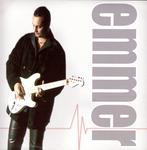

| Artist: | Peter Emmer |
| Title: | Peter Emmer |
| Label: | MusicNet Club ZG 0002-2-331 |
| Length(s): | 66 minutes |
| Year(s) of release: | 2004 |
| Month of review: | [12/2005] |
| 1) | Passion | 4.28 |
| 2) | Crossroads | 4.01 |
| 3) | Euthanasia | 4.20 |
| 4) | Just Funk | 3.46 |
| 5) | Roxana | 5.10 |
| 6) | Little Bit Of Soul | 4.57 |
| 7) | Goodbye | 4.20 |
| 8) | Quiero Mas | 4.28 |
| 9) | Virus | 3.59 |
| 10) | Home Coming | 3.32 |
| 11) | First Time | 3.26 |
| 12) | 1984 | 4.48 |
| 13) | Summer Love | 4.43 |
| 14) | Why? | 5.29 |
| 15) | Promised Land | 4.46 |
Crossroads is more of a funky rock track, and has nothing to do with prog whatsoever. To me, this is quite boring. Euthanasia is more of a laid back track with moody guitar lines. A bit like DO Go Gentle Into That Long Night... A melodic tune, a bit too in fact.
With a title Just Funk, he goes too far again. This is all way too bouncy for my tastes. Although the drumming is on the whole too straightforward, I did not notice immediately that we have a drum computer here. A good drummer might have helped to enhance the groove and aid versatility, but they are not that easy find, and the question is whether the overall record would really improve.
Roxana is a typical guitar ballad, melodic, plenty of meandering on the guitar too, and some acoustic guitar in between for a warmer, relaxed feeling. At the end a Santana like outburst.
As such we move through the remainder of the songs, which do not bring much new: alternating between melodic and less melodic (usually more groovy and percussive tunes), with a bit of bite here and there, but also some very poppy material (like on the Celine Dionesque Goodbye), there is nothing challenging to be encountered. Sometimes the music may veer to Santana or to jazzrock, and even an occasional acoustic guitar only tune (Home Coming), but that is it. On Why? and Promised Land the openings are very synthy. The latter is a moody track somewhat in the vein of Peter Gabriel with a Western twang.